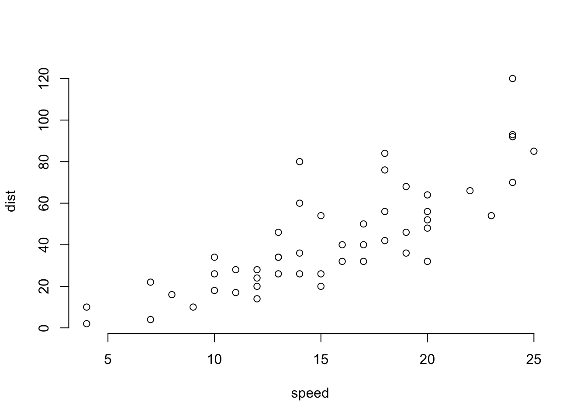
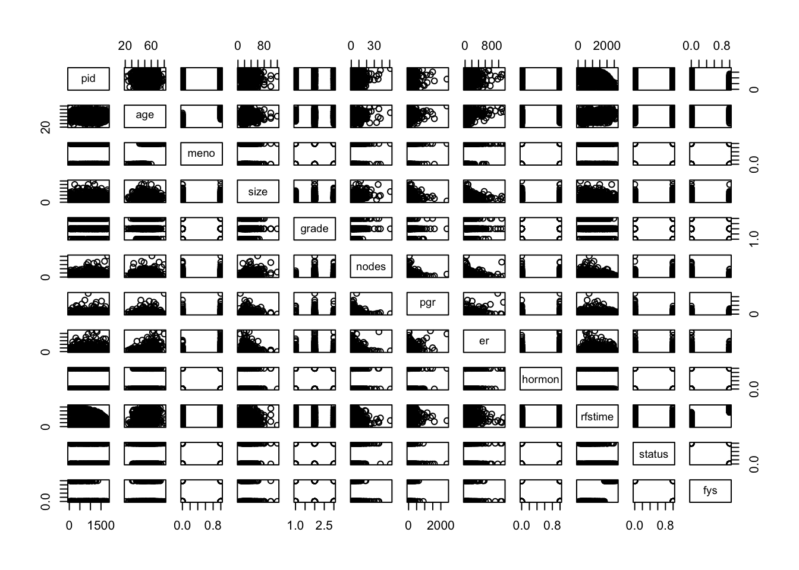
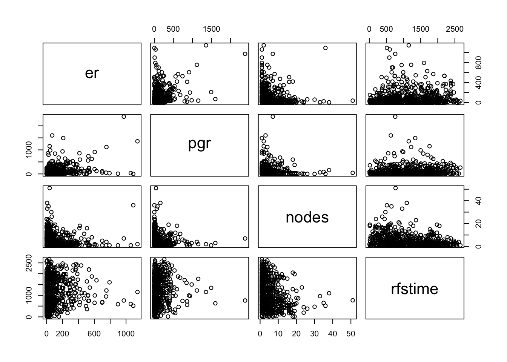
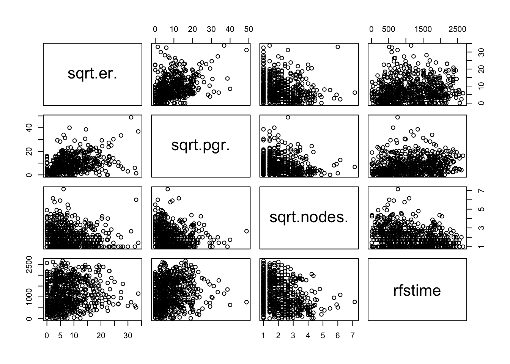
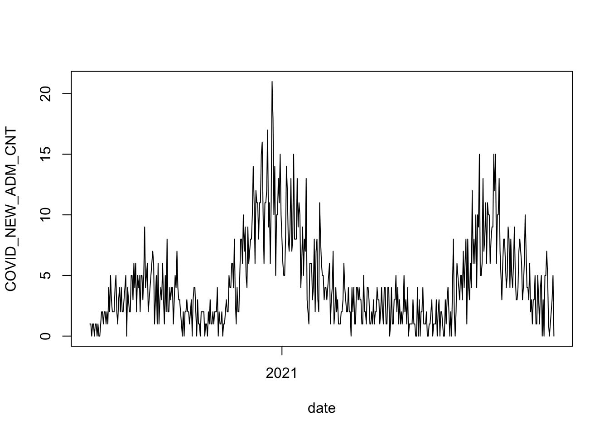
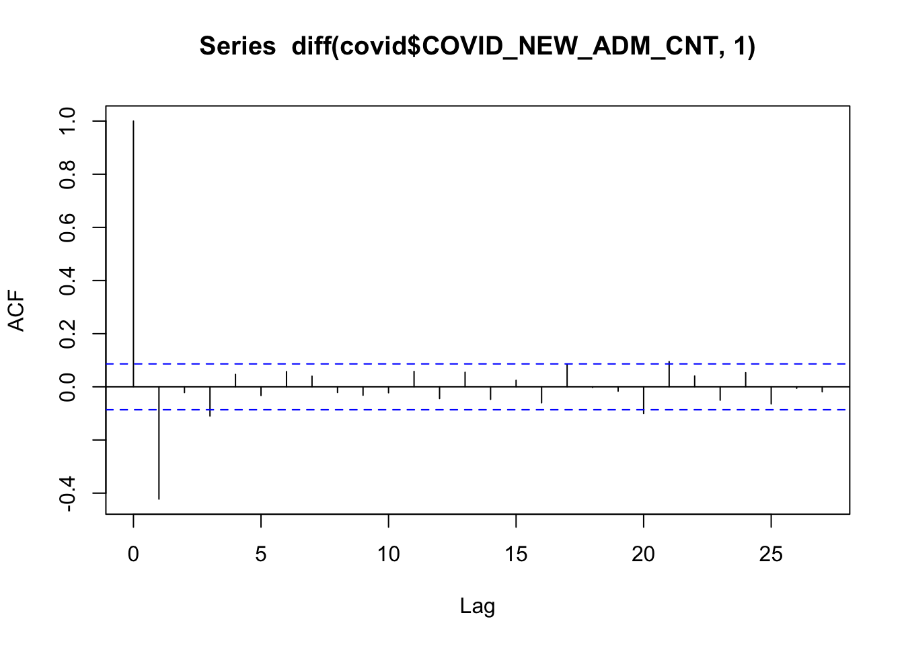

1 Beginnings
Validating a model is the process of testing it to decide whether the assumptions that are built into the model’s construction are valid. Typically, any kind of statistical method entails some assumptions about the data. That usually means assumptions about the population from which the data were sampled. It is generally impossible to confirm an assumption like, “samples from the population are independent” or, “the population is normally distributed”. Instead, we follow the scientific method of proposing some phenomenon that is bound to happen if the assumption is true, and then if that phenomenon does not occur we have evidence against the assumption.
Statistical modeling and model validation begin no later than your first look at your data. This is when you can begin to ask questions like, - “Are there limits to the range of the response variable?” - “What is the distribution of the response variable?” - “Based on my prior knowledge, am I able to anticipate the structure of the model?”
If you have answers to these, then you are well on your way to creating a great model. With that in mind, I’m going to start this workshop by introducing examples of data.
1.1 Examples
Let’s load the data for a few examples of data that we’ll be looking at today. First, though, we need to load some packages and set the path to use for loading data.
library( "dplyr" )
library( "lubridate" )
library( "readr" )
library( "gbm" )
# set the root path for loading data.
data_path = "https://raw.githubusercontent.com/ucdavisdatalab/workshop-model-validation/master/data/"1.1.1 Stopping distance
This data set has fifty measurements of stopping distance for cars travelling at different speeds. Here’s a plot of the data:
# load the data
data( cars )
# plot the cars data
plot( cars, bty='n' )
We have some relevant prior knowledge: speed and distance are both positive, zero speed implies zero stopping distance, and kinetic energy is proportional to the square of speed. Both speed and distance are continuous quantities, and the vertical spread of the points tends to get wider as the speed increases.
1.1.2 Breast cancer survival
We will also use the built-in data set gbsg for an analysis of which factors affected the five-year survival of women in the German Breast Cancer Study Group (GBSG). Let’s import the data and generate the five year survival variable:
# import the gbsg data
gbsg = read_csv( url(paste0(data_path, "gbsg.csv")) )
# make a factor of the grade
gbsg$grade = factor( gbsg$grade )
# generate the variable `fys`, to indicate five year recurrence-free survival:
gbsg$fys = with(gbsg, ifelse( rfstime > 365*5, 1, ifelse(status == 0, NA, 0)))
# plot the data
plot( gbsg )
The five year recurrence-free survival outcome is binary, so anticipate using a generalized linear model with binomial response (logistic regression, for example). The pair plot of all the data has some interesting features in the er, pgr, and nodes variables. Let’s take a closer look at those, specifically.
# make a plot of the `er`, `pgr`, and `nodes` variables, with `rfstime`.
plot( gbsg[, c("er", "pgr", "nodes", "rfstime")])
It looks like er, pgr, and nodes are all non-negative, with patterns that cluster near zero and have progressively fewer data points at greater values. These variables are, respectively, the concentrations of estrogen receptors, the concentration of progesterone receptors, and the number of positive lymph nodes. (Subjects in the study were women with at least one positive lymph node biopsy, so none had zero positive nodes.)
If we try to fit a linear trend to these data, the few observations with extremely high concentrations of receptors or many positive nodes will be influential outliers, while any meaningful detail near zero will be lost. In order to avoid those pitfalls, a log() or sqrt() transformation may be appropriate. Here, I’ll use a log() transformation on nodes, and a sqrt() transformation for the other two variables, in order to avoid problems trying to calculate log(0) for those women who had no progesterone or estrogen receptors.
# plot the square-root transformes er, pgr, and nodes variables, with rfstime:
with( gbsg, plot( data.frame(sqrt(er), sqrt(pgr), sqrt(nodes), rfstime)))
Note how the outliers have been brought back toward the mass of data, and the detail at the low end has been expanded. A bit of work on the front end can avoid really difficult problems in the analysis and validation later.
1.1.3 COVID-19 hospital admissions
The third data set that we’ll use for illustration is a time series of daily hospital admissions for COVID-19. I like to begin with a pair plot of all the data, but here we have 81 columns, which is too many to fit on a pair plot. Instead, we’ll look at the time series.
# import the covid dataset
covid = read_csv( url( paste0(data_path, "covid.csv")) )
# plot the admissions time series
with( covid, plot(date, COVID_NEW_ADM_CNT, type='l') )
The count of daily admissions is a nonnegative integer. It appears that there is a lot more variability in the admissions count when the recent rate of admissions is near its peaks than when it is near zero. There isn’t a theoretical maximum for daily admissions (though of course there would be a practical maximum, if the hospital became overwhelmed). And we can reasonably assume that each admission was an independent decision. To a statistician, those facts all point toward trying to assume that the counts follow a Poisson distribution.
There is another type of independence to consider here: is the number of daily admissions independent from the number of admissions the day before? That kind of independence doesn’t mean you pretend that there’s no information in the most recent counts - instead, it means that the short-term fluctuations are as likely to be above the trend as below it. Without that independence, we would say that the data are autocorrelated. And we can test for autocorrelation:
# plot the autocorelation function of the diff-1 covid admissions
acf( diff(covid$COVID_NEW_ADM_CNT, 1) )
The salient feature of this plot is that the second line points downward, and crosses the dashed blue line. There is apparently a tendency for the count to decrease the day after it increases, and vice versa. This may or may not be due to some trend in the covariates - we’ll check again after accounting for the explanatory variables.
1.2 Typical modeling assumptions
There are three general assumptions that underlie most statistical models
- Observations are usually assumed to be independent of each other (or assume some specific form of dependence).
- The expectation of the response variable is a function of the input variables. \(\mathbb{E}(Y) = f(X)\).
- The response variable has some distribution, like \(Y\) is Normal, or binomial, or Poisson.
Validating these assumptions also requires that the function \(f(\cdot)\) and the response distribution can be learned from the data.
So, how can we test (validate) these assumptions? A key problem is that they can’t be tested from within a fitted model. The way statistical estimation works is that you assume the form of a model, and then find the parameters that best match the data and the assumption. Testing requires applying the model to new data in order to see if the predictions match the truth.